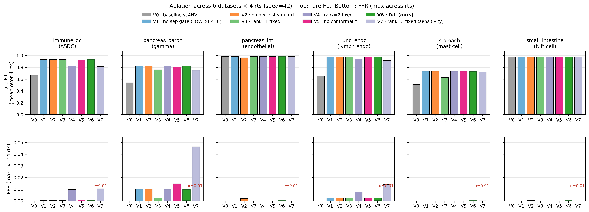
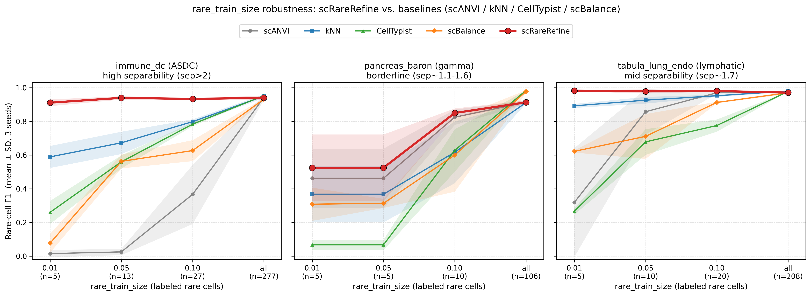

输入是 scANVI 的两样产物：每个细胞的 latent 向量 z ∈ ℝd
和预测标签 base_pred。scRareRefine 只读这两样，输出修正后的预测，全程不接触 test 标签。
一句话：对 scANVI 漏判（≠rare）、几何上又最靠近 rare 原型（rank-1）的细胞，用各向异性隶属度打分， 只有分数超过「用 val 非稀有细胞按 1% 假阳性率校准出的阈值 τ」才改判为 rare；若该数据集稀有类与多数类不可分（sep<1.3），整体弃权不救。
下面是一份合成的 latent 空间（3 个多数类簇 + 1 个稀有簇）。拖动滑块改变稀有簇与最近多数类的间隔，
所有面板与统计会实时重算——原型、可分性 sep、conformal 阈值 τ、救回与误救数量全部由真实公式驱动，
与 src/rescue.py 一致。把滑块拉到最左，可观察 sep<1.3 触发整体弃权。
在 latent 空间用训练集有标签样本估计每个细胞类型的中心（原型），并量化稀有类是否「几何上可分」。
分子=稀有原型到最近多数类原型的距离；分母=稀有簇平均半径。 sep 越大，稀有簇越"独立成团"。稀有标注<3 时强制 sep=0（触发弃权）。
对应代码：PrototypeRescuer.fit() · src/rescue.py:38–71
只挑出「scANVI 没判成稀有」且「在普通欧氏距离下离稀有原型最近」的细胞作为候选。这是高精度的硬闸门。
第一项排除已被正确识别的稀有细胞（无需处理）；第二项要求该细胞在几何上确实最像稀有类。 在演示面板②中，被黑色描边标出的就是候选——它们大多是落在橙色稀有簇里、却被 scANVI 判成灰色多数类的「漏网细胞」。
对应代码：PrototypeRescuer.isotropic_rank1() · src/rescue.py:89–96
给每个细胞一个连续的「稀有性」分数。关键是每个类用自己的半径 rc 归一化距离（各向同性 Mahalanobis 近似）， 让评分对各类尺度自适应，缓解边界数据集中相邻多数类「侵入」稀有类。
对比 ③（各向异性，除以 rc）与朴素的各向同性 softmax(−d)：当稀有簇较紧致、相邻多数类较松散时， 归一化能把稀有细胞的分数顶上去、把多数类压下来，这正是消融实验中 V4（各向异性）在 borderline 数据集优于 V3（各向同性）的原因。
对应代码：PrototypeRescuer.rare_membership_score() · src/rescue.py:73–87
不在小候选集上 grid-search 阈值（会过拟合、val→test 漂移），而是用 validation 集里数百~数千个非稀有细胞的分数， 取一个保守上分位作为阈值 τ，给出分布无关的假阳性率上界。
它的自适应性是整套方法的精髓：
| 场景 | val 非稀有分数 | τ | 效果 |
|---|---|---|---|
| 高可分数据集 | 普遍很低 | 低 | 真稀有分数远高于 τ → 召回不退化 |
| 边界数据集 | 相邻多数类分数偏高 | 自动抬升 | 挡住会被误救的多数类 → 控制 FFR |
对应代码：ConformalRescuer.calibrate() / _conformal_quantile() · src/rescue.py:462–477
同时满足「是候选」且「分数过阈」的细胞才改判为稀有类；其余一律保留 scANVI 原判。
base_pred。
宁可不救，也不在不可分的场景制造大量误救——这保证了方法在难数据集上「无害」。对应代码：ConformalRescuer.relabel() + 弃权判断 · src/rescue.py:479–486 / tools/comparison/compare_baselines.py:158
每一个被「学习」出来的量都有唯一来源，test 标签只在最终评估时出现，代码层面严格隔离、无泄漏。
| 量 | 唯一来源 | 绝不接触 |
|---|---|---|
| 原型 μc、半径 rc、可分性 sep | train 有标签子集 | val / test |
| conformal 阈值 τ | validation 非稀有细胞 score | test |
| test 标签 | 仅用于最终评估指标 | 不参与任何原型 / 阈值 / 调参 |
在三个数据集（immune_dc / pancreas_baron / tabula_lung_endo）× 3 seed 上，对比 scANVI / kNN / CellTypist / scBalance。
| 数据集 | scANVI | kNN | CellTypist | scBalance | scRareRefine |
|---|---|---|---|---|---|
| immune_dc | 0.025 | 0.673 | 0.560 | 0.557 | 0.939 |
| pancreas_baron | 0.825 | 0.617 | 0.628 | 0.709 | 0.849 |
| tabula_lung_endo | 0.969 | 0.952 | 0.775 | 0.923 | 0.980 |

